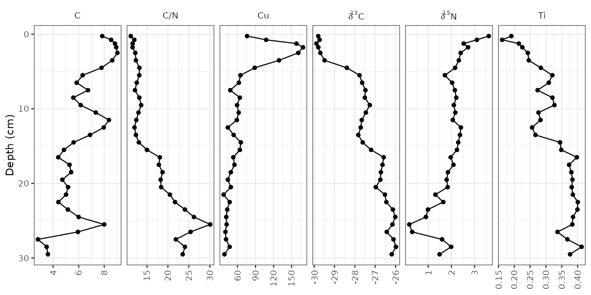
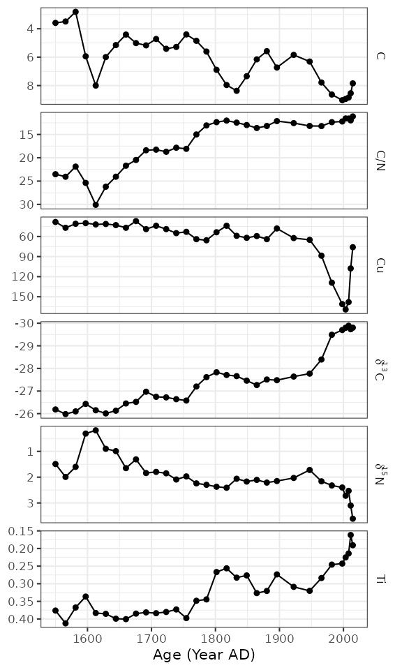
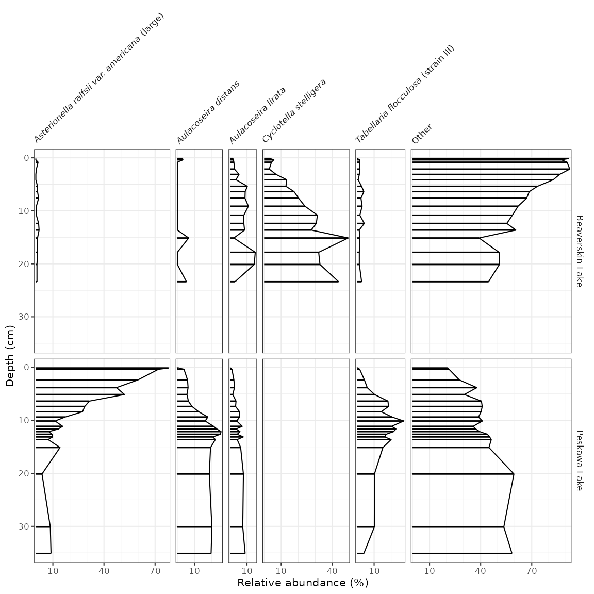
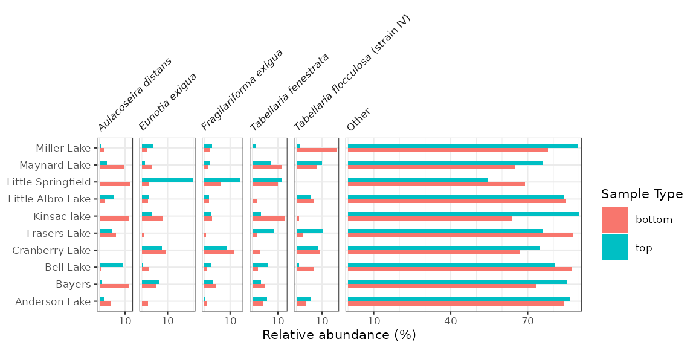
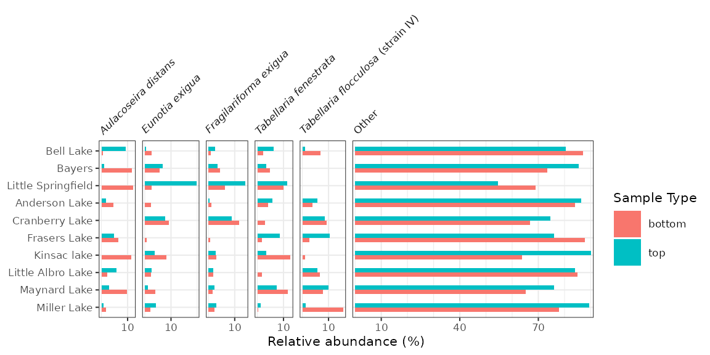

Stratigraphic diagrams
Dewey Dunnington
2023-01-18
Source:vignettes/strat_diagrams.Rmd
strat_diagrams.RmdThis vignette covers creating stratigraphic diagrams using ggplot2, highlighting the helpers contained within tidypaleo. The ggplot2 framework was chosen because it is quite flexible and can be used to create almost any time-stratigraphic diagram except ones that involve multiple axes (we can have a fight about whether or not those are appropriate anyway, but if you absolutely need to create them I suggest you look elsewhere). It will help considerably if you are already familiar with ggplot2 (a great tutorial can be found here).
First, you will need to load the packages. For this tutorial, I will
use tidypaleo, and the tidyverse (this
includes ggplot2). Later, I will use
patchwork to create more complex plots. I prefer the
theme_paleo() theme for stratigraphic diagrams using
ggplot2, so I will set this here as well. Setting the
base font size to a small value (8 pt in this case) is useful for our
purposes.
Next, you will need to load the example data. This vignette uses 4
datasets that are already in the correct format for plotting. These are
datasets in the tidypaleo package:
long_lake_plottable, alta_lake_geochem,
keji_lakes_plottable, and
halifax_lakes_plottable. These represent four common
dataset types for which stratigraphic plots are created.
data("long_lake_plottable")
data("alta_lake_geochem")
data("keji_lakes_plottable")
data("halifax_lakes_plottable")Geochemical stratigraphic plots
Geochemical stratigraphic plots include any kind of plot where each
panel of the plot should be scaled to the minimum and maximum of the
data. This includes (most) non-species abundance data. The example data,
alta_lake_geochem, is a data frame in parameter-long (one
row per measurement) form (you may need to use gather() to
get your data into this form, which you can learn about in this tutorial). These
measurements are from Alta Lake, British Columbia (Canada), and you can
read more about them in the journal
article.
alta_lake_geochem
#> # A tibble: 192 × 9
#> location param depth age value stdev units n zone
#> <chr> <chr> <dbl> <dbl> <dbl> <dbl> <chr> <int> <chr>
#> 1 ALGC2 Cu 0.25 2015. 76 NA ppm 1 Zone 3
#> 2 ALGC2 Cu 0.75 2011. 108. 4.50 ppm 3 Zone 3
#> 3 ALGC2 Cu 1.25 2008. 158 NA ppm 1 Zone 3
#> 4 ALGC2 Cu 1.75 2003. 169 NA ppm 1 Zone 3
#> 5 ALGC2 Cu 2.5 1998. 161 NA ppm 1 Zone 3
#> 6 ALGC2 Cu 3.5 1982. 129 NA ppm 1 Zone 3
#> 7 ALGC2 Cu 4.5 1966. 88.7 3.86 ppm 3 Zone 2
#> 8 ALGC2 Cu 5.5 1947. 65 NA ppm 1 Zone 2
#> 9 ALGC2 Cu 6.5 1922. 62.3 9.53 ppm 3 Zone 2
#> 10 ALGC2 Cu 7.5 1896. 48 NA ppm 1 Zone 2
#> # … with 182 more rowsPlotting a single core with ggplot() involves several
steps:
- The initial
ggplot()call, where we set which columns will get mapped to thexandyvalues for each layer. - Two layers:
geom_lineh()andgeom_point(). We usegeom_lineh()because our plots will be oriented vertically (geom_line()is designed for horizontal plots). - Specify how data are divided between facets using
facet_geochem_gridh()(we use_gridh()to orient the panels horizontally rather than vertically). - Reverse the Y-axis, so that a depth of 0 is at the top.
- Remove the X label, and set the Y label to “Depth (cm)”.
alta_plot <- ggplot(alta_lake_geochem, aes(x = value, y = depth)) +
geom_lineh() +
geom_point() +
scale_y_reverse() +
facet_geochem_gridh(vars(param)) +
labs(x = NULL, y = "Depth (cm)")
alta_plot
That’s it! Of course, there are many modifications that can be made, which are covered in the next few sections.
Adding annotations
It is common to highlight certain depths or ages on strat diagrams, or to add things to various places on a plot. This is accomplished by adding additional layers to the plot. For example, highlighting the depth at which the zones change (according to the paper, this is at 4 cm and 16 cm).
alta_plot +
geom_hline(yintercept = c(4, 16), col = "red", lty = 2, alpha = 0.7)
The geom_hline() function creates its own data using the
yintercept argument, but other geometries require us to
create our own data. For example, highlighting the middle zone using
geom_rect() would look like this:
zone_data <- tibble(ymin = 4, ymax = 16, xmin = -Inf, xmax = Inf)
alta_plot +
geom_rect(
mapping = aes(ymin = ymin, ymax = ymax, xmin = xmin, xmax = xmax),
data = zone_data,
alpha = 0.2,
fill = "blue",
inherit.aes = FALSE
)
So far, each new layer we have added has been propogated to all
facets. To restrict annotations to a specific facet, we need to include
the facetting column (in this case, param) in the layer
data. The element copper (Cu) has standards set by the Canadian
government (ISQG of 35.7 ppm), and highlighting values that are outside
that range can be done in a similar way to highlighting the middle
zone.
cu_standard_data <- tibble(param = "Cu", xmin = 35.7, xmax = Inf, ymin = -Inf, ymax = Inf)
alta_plot +
geom_rect(
mapping = aes(ymin = ymin, ymax = ymax, xmin = xmin, xmax = xmax),
data = cu_standard_data,
alpha = 0.2,
fill = "red",
inherit.aes = FALSE
)
To highlight the syntax that changed from the original plot, I’ve
been using alta_plot + ..., however with layers such as
these, it may be desirable to have the annotation appear under the
original data. To do this, you would have to add your annotation layer
(geom_rect()) before your data layer
(geom_lineh() and geom_point()).
Error bars
In the alta_lake_geochem data frame, there is a column
for standard deviation (stdev). You can plot these values
as error bars using geom_errorbarh().
alta_plot +
geom_errorbarh(aes(xmin = value - stdev, xmax = value + stdev), height = 0.5)
Reordering facets
To control the order of the facets, the column on which they are
facetted (param) must be a factor(), where the
levels indicate the order. I suggest using
fct_relevel() to do this, so that you only need to specify
which items should go first. Usually I do this using a pipe
(%>%) and mutate() to avoid assigning any
intermediate variables.
alta_lake_geochem %>%
mutate(param = fct_relevel(param, "Ti", "Cu", "C/N")) %>%
ggplot(aes(x = value, y = depth)) +
...
Plotting a subset of the data
The halifax_geochem data frame was designed so that it
is a reasonable number of parameters to plot at one time. Usually you
will have a data frame with many more parameters, which you can subset
using filter() before calling ggplot().
Usually I do this using a pipe (%>%) to avoid assigning
any intermediate variables.
alta_lake_geochem %>%
filter(param %in% c("d15N", "d13C", "C/N")) %>%
ggplot(aes(x = value, y = depth)) +
...
Using a y-axis with ages and depths
When plotting a single core, it is good practice to plot both ages
and depths in the core. In ggplot2, this comes as a
second axis generated by a helper function,
scale_y_depth_age(), that uses an
age_depth_model() to produce a second axis. For Alta Lake,
the age depth model as published is included in the
alta_lake_bacon_ages object. It’s possible to set the age
breaks using the age_breaks argument, and the labels using
the age_labels argument (this is useful for adding error
information to ages on a second axis). The axis title can be set using
the age_name argument.
alta_adm <- age_depth_model(
alta_lake_bacon_ages,
depth = depth_cm,
age = 1950 - age_weighted_mean_year_BP
)
alta_plot +
scale_y_depth_age(
alta_adm,
age_name = "Age (Year AD)"
)
Adding units to facet labels
Ideally, we’d like to specify the unit in which each of these
parameters was measured. This can be done (1) by renaming each parameter
before it gets to ggplot(), or (2) by using the
units argument of the facet_geochem_*()
functions. I suggest using the second option because it maintains the
order of the parameters that you’ve chosen, and keeps the automatic
reformatting of d13C. The units argument takes
a named character vector, which you can create using
c("parameter" = "unit"). If most paremeters are in the same
unit, you can pass the default unit using
default_unit = "unit", and if you need to suppress a unit
for an item, you can use NA.
alta_plot +
facet_geochem_gridh(
vars(param),
units = c("C/N" = NA, "Cu" = "ppm", "d13C" = "‰", "d15N" = "‰"),
default_units = "%"
)
Multiple cores
So far we’ve plotted one core. That’s great, but often there is more
than one core that needs to be plotted. There are two ways to go about
this depending on how you would like identical parameters for each lake
to be compared: using facet_geochem_gridh() will stretch
the axis limits to fit values from both cores, and creating (and
combining) two separate plots using patchwork::wrap_plots()
will result in each panel stretching to the min/max of the data for that
parameter. We’ll illustrate both of these using some other data from
Long Lake, Nova Scotia.
combined_data <- bind_rows(long_lake_plottable, alta_lake_geochem)
combined_data
#> # A tibble: 243 × 12
#> dataset location param depth value sd units zone n n_det…¹ age
#> <chr> <chr> <chr> <dbl> <dbl> <dbl> <chr> <chr> <int> <int> <dbl>
#> 1 long_lake17 LL PC2 C/N 1 15.4 NA NA Unit… 1 1 NA
#> 2 long_lake17 LL PC2 C/N 6 15.8 0.290 NA Unit… 2 2 NA
#> 3 long_lake17 LL PC2 C/N 11 24.0 NA NA Unit… 1 1 NA
#> 4 long_lake17 LL PC2 C/N 16 21.4 NA NA Unit… 1 1 NA
#> 5 long_lake17 LL PC2 C/N 21 23.2 NA NA Unit… 1 1 NA
#> 6 long_lake17 LL PC2 C/N 26 25.4 NA NA Unit… 1 1 NA
#> 7 long_lake17 LL PC2 C/N 43 27.2 NA NA Unit… 1 1 NA
#> 8 long_lake17 LL PC2 C/N 48 24.3 NA NA Unit… 1 1 NA
#> 9 long_lake17 LL PC2 C/N 53 30.2 NA NA Unit… 1 1 NA
#> 10 long_lake17 LL PC2 C/N 63 24.4 NA NA Unit… 1 1 NA
#> # … with 233 more rows, 1 more variable: stdev <dbl>, and abbreviated variable
#> # name ¹n_detectFirst we’ll go over the facet_geochem_gridh() approach,
which adds location as another grouping variable. This will
align parameters with themselves vertically, with one row on the plot
per core. This usually the best option, as it makes values from one plot
to another be directly comparable.
ggplot(combined_data, aes(x = value, y = depth)) +
geom_lineh() +
geom_point() +
scale_y_reverse() +
facet_geochem_gridh(vars(param), grouping = vars(location), scales = "free") +
labs(x = NULL, y = "Depth (cm)")
The other way to do this is to create two separate plots, and combine
them using the patchwork package. This is a good option
when values from one core to another are so different that placing them
on the same axis results in trends being obscured, or when ages and
depths are absolutely necessary for both plots (using
scale_y_depth_age() doesn’t work when combining locations
using a facet).
alta_plot_1 <- combined_data %>%
filter(location == "ALGC2") %>%
ggplot(aes(x = value, y = depth)) +
geom_lineh() +
geom_point() +
scale_y_reverse() +
facet_geochem_gridh(vars(param), scales = "free") +
labs(x = NULL, y = "Depth (cm)", title = "Alta Lake")
long_plot_2 <- combined_data %>%
filter(location == "LL PC2") %>%
ggplot(aes(x = value, y = depth)) +
geom_lineh() +
geom_point() +
scale_y_reverse() +
facet_geochem_gridh(vars(param), scales = "free") +
labs(x = NULL, y = "Depth (cm)", title = "Long Lake")
library(patchwork)
wrap_plots(alta_plot_1, long_plot_2, ncol = 1)
Adding a dendrogram
It’s fairly common to see a CONISS dendrogram at the right of plots,
and so tidypaleo wouldn’t be complete if it couldn’t
make that happen. For a variety of technical reasons, you have to
specify that you need depth mapped to the y
aesthetic for both layer_zone_boundaries() and
layer_dendrogram(). Note that you’ll have to do CONISS
using nested_chclust_coniss(), which uses the
rioja package to do the constrained cluster analysis.
By default, this will calculate the number of plausible zones based on a
broken stick simulation.
coniss <- alta_lake_geochem %>%
nested_data(qualifiers = c(age, depth), key = param, value = value, trans = scale) %>%
nested_chclust_coniss()
alta_plot +
layer_dendrogram(coniss, aes(y = depth), param = "CONISS") +
layer_zone_boundaries(coniss, aes(y = depth))
Using facet_geochem_wraph()
If you are familiar with facet_grid() in
ggplot2, you will notice that
facet_geochem_gridh() has done a few things differently,
including automatically renaming d13C and d15N
to the proper formatting. This function also rotates axis labels,
because this is the only sure-fire way to make sure they don’t overlap.
You can un-rotate them using rotate_axis_labels = 0, and
you can wrap panels in a defined number of rows or columns using
facet_geochem_wraph(). This works well for plotting a
larger number of parameters when there is only one core involved.
alta_plot +
facet_geochem_wraph(vars(param), rotate_axis_labels = 0, ncol = 4)
Going horizontal
Most stratigraphic diagrams are vertical, which is a reflection on
the orientation of the core from which the data came. In many cases
(especially when age is one of the axes), it may be adventageous to have
the plots be horizontal, with time running from left to right along the
x-axis. A few things need to change from our original plot, including
the mapping, the line geometry, and the facet specification. Here I’ve
used facet_geochem_grid() to stack the plots vertically,
but you could also use facet_geochem_wrap().
ggplot(alta_lake_geochem, aes(x = age, y = value)) +
geom_line() +
geom_point() +
scale_y_reverse() +
facet_geochem_grid(vars(param)) +
labs(x = "Age (Year AD)", y = NULL)
Species abundance stratigraphic plots
If our data is relative species abundance, there are a few more
restrictions on the plot: each facet must represent values such that 10%
abundance on one facet is equal to 10% in another facet, and facet names
are often long enough that they must be rotated. The sample data for
these exercises is keji_lakes_plottable, which again is in
the form of one row per measurement. This dataset contains two lakes,
Beaverskin Lake and Peskawa Lake, both located within Keji National
Park, Nova Scotia, Canada (Ginn et
al. 2007).
data("keji_lakes_plottable")
keji_lakes_plottable
#> # A tibble: 202 × 5
#> location depth taxon count rel_a…¹
#> <chr> <dbl> <fct> <dbl> <dbl>
#> 1 Beaverskin Lake 0.125 Asterionella ralfsii var. americana (lar… 0 0
#> 2 Beaverskin Lake 0.125 Aulacoseira distans 7 3.02
#> 3 Beaverskin Lake 0.125 Aulacoseira lirata 4 1.72
#> 4 Beaverskin Lake 0.125 Cyclotella stelligera 8 3.45
#> 5 Beaverskin Lake 0.125 Tabellaria flocculosa (strain III) 0 0
#> 6 Beaverskin Lake 0.125 Other 213 91.8
#> 7 Beaverskin Lake 0.375 Asterionella ralfsii var. americana (lar… 0 0
#> 8 Beaverskin Lake 0.375 Aulacoseira distans 8 3.25
#> 9 Beaverskin Lake 0.375 Aulacoseira lirata 5 2.03
#> 10 Beaverskin Lake 0.375 Cyclotella stelligera 14 5.69
#> # … with 192 more rows, and abbreviated variable name ¹rel_abundThe code to generate the plot is similar to our previous plots,
except we use geom_col_segsh() (which instead of points or
a path, draws lines connected to the x-axis), and
facet_abundanceh() (which takes care of rotating facet
labels, partially italicizing them, and setting the scales for each
panel to start at 0.
keji_plot <- ggplot(keji_lakes_plottable, aes(x = rel_abund, y = depth)) +
geom_col_segsh() +
scale_y_reverse() +
facet_abundanceh(vars(taxon), grouping = vars(location)) +
labs(x = "Relative abundance (%)", y = "Depth (cm)")
keji_plot
#> Warning: Using the `size` aesthetic in this geom was deprecated in ggplot2 3.4.0.
#> ℹ Please use `linewidth` in the `default_aes` field and elsewhere instead.
Most of the modifications you can make on these plots are identical to the modifications you can make on non-abundance plots (see previous section), except for a few that we describe below.
Different styles
There are a few famous styles for abundance plots, because a few
existing programs (like Tilia, C2,
and rioja) have
some very specific defaults that show up on repeat in the literature.
These styles can be replicated by changing or adding to
geom_col_segsh(). For example, the classic Tilia “area”
style for pollen diagrams:
ggplot(keji_lakes_plottable, aes(x = rel_abund, y = depth)) +
geom_areah() +
scale_y_reverse() +
facet_abundanceh(vars(taxon), grouping = vars(location)) +
labs(x = "Relative abundance (%)", y = "Depth (cm)")Or for rioja-style diagrams, use geom_col_segsh() plus
geom_lineh():
ggplot(keji_lakes_plottable, aes(x = rel_abund, y = depth)) +
geom_col_segsh() +
geom_lineh() +
scale_y_reverse() +
facet_abundanceh(vars(taxon), grouping = vars(location)) +
labs(x = "Relative abundance (%)", y = "Depth (cm)")
Exaggerating low-abundance taxa
It’s common to see some kind of geometry on abundance diagrams
exaggerating low-abundance variation. You can use the
*_exaggerate() varieties of geom_lineh(),
geom_areah(), and geom_point() to display this
information without affecting the scales. If you want to include it only
for certain taxa, you can pass
data = keji_lakes_plottable %>% filter(...) to only
include certain measurements.
keji_plot +
geom_lineh_exaggerate(exaggerate_x = 5, col = "grey70", lty = 2)
Adding non-abundance data
To add non-abundance data in the same figure, we need to create two
plots and combine them using patchwork’s
wrap_plots() function. In this example, I’m going to use
PCA scores, computed by the nested_prcomp() function, and
get them into parameter-long form using gather(). Note that
when I create the plots, I make sure the labels still exist, and then I
nix the labels inbetween the two plots using a few theme()
modifications. It’s important to make sure that the panel labels and
scale lables are the same before removing them!
keji_pca_scores <- keji_lakes_plottable %>%
group_by(location) %>%
nested_data(qualifiers = depth, key = taxon, value = rel_abund, trans = sqrt) %>%
nested_prcomp() %>%
unnest(qualifiers, scores) %>%
gather(key = component, value = value, starts_with("PC")) %>%
filter(component %in% c("PC1", "PC2"))
#> Warning: unnest() has a new interface. See ?unnest for details.
#> Try `df %>% unnest(c(qualifiers, scores))`, with `mutate()` if needed
keji_pca_plot <- ggplot(keji_pca_scores, aes(x = value, y = depth)) +
geom_lineh() +
geom_point() +
scale_y_reverse() +
facet_geochem_gridh(vars(component), grouping = vars(location)) +
labs(x = NULL)
library(patchwork)
wrap_plots(
keji_plot +
theme(strip.background = element_blank(), strip.text.y = element_blank()),
keji_pca_plot +
theme(axis.text.y.left = element_blank(), axis.ticks.y.left = element_blank()) +
labs(y = NULL),
nrow = 1,
widths = c(4, 1)
)
Adding dendrograms
Adding a CONISS (or other) dendrogram created using
nested_chclust_coniss() can be done in two ways: if there
is already a non-abundance plot that exists, the dendrogram can be added
to that plot using layer_dendrogram(). If there is not
already a non-abundance plot, we need to create that plot. Then, the two
plots can be combined using patchwork’s
wrap_plots().
keji_coniss <- keji_lakes_plottable %>%
group_by(location) %>%
nested_data(qualifiers = depth, key = taxon, value = rel_abund) %>%
nested_chclust_coniss()
library(patchwork)
# method 1: use existing non-abundance plot
wrap_plots(
keji_plot +
theme(strip.background = element_blank(), strip.text.y = element_blank()),
keji_pca_plot +
layer_dendrogram(keji_coniss, component = "CONISS", aes(y = depth)) +
theme(axis.text.y.left = element_blank(), axis.ticks.y.left = element_blank()) +
labs(y = NULL),
nrow = 1,
widths = c(2, 1)
)
# method 2: create a standalone plot for CONISS
coniss_plot <- ggplot() +
layer_dendrogram(keji_coniss, aes(y = depth)) +
scale_y_reverse() +
facet_geochem_gridh(vars("CONISS"), grouping = vars(location)) +
labs(x = NULL)
wrap_plots(
keji_plot +
theme(strip.background = element_blank(), strip.text.y = element_blank()),
coniss_plot +
theme(axis.text.y.left = element_blank(), axis.ticks.y.left = element_blank()) +
labs(y = NULL),
nrow = 1,
widths = c(6, 1)
)
Top/bottom/spatial diagrams
So far we have looked at data that have depth as an axis. Another
sample strategy includes collecting cores with a small number of samples
in each (such as top/bottom, or sometimes just a surface sample). A
sample dataset of this type was collected by Ginn et
al. (2015) in lakes near Halifax, Nova Scotia. A subset of these
measurements can be found in the halifax_lakes_plottable
data frame.
data("halifax_lakes_plottable")
halifax_lakes_plottable
#> # A tibble: 114 × 5
#> location sample_type taxon count rel_abund
#> <chr> <chr> <fct> <dbl> <dbl>
#> 1 Anderson Lake bottom Aulacoseira distans 26 4.65
#> 2 Anderson Lake bottom Eunotia exigua 13.5 2.42
#> 3 Anderson Lake bottom Fragilariforma exigua 6.5 1.16
#> 4 Anderson Lake bottom Tabellaria fenestrata 23 4.11
#> 5 Anderson Lake bottom Tabellaria flocculosa (strain IV) 21 3.76
#> 6 Anderson Lake bottom Other 469 83.9
#> 7 Anderson Lake top Aulacoseira distans 8.5 1.87
#> 8 Anderson Lake top Eunotia exigua 0 0
#> 9 Anderson Lake top Fragilariforma exigua 1.5 0.330
#> 10 Anderson Lake top Tabellaria fenestrata 26 5.71
#> # … with 104 more rowsThese diagrams are essentially bar charts, and use
geom_colh() to draw their geometry (this works better than
geom_col_segsh(), which only draws a thin line). We can
separate top/bottom samples by setting an additional aesthetic,
fill = sample_type, and make sure they dodge vertically by
setting position = "dodgev".
halifax_plot <- ggplot(halifax_lakes_plottable, aes(x = rel_abund, y = location, fill = sample_type)) +
geom_colh(width = 0.5, position = "dodgev") +
facet_abundanceh(vars(taxon)) +
labs(x = "Relative abundance (%)", y = NULL, fill = "Sample Type")
halifax_plot
Ordering lakes on the y-axis
Diagrams with a discrete axis (in this case, the y-axis) tend to be
most efffective when they are ordered in some way. By default,
ggplot2 orders them alphabetically and lists them
bottom to top. We can change this order in a similar way to changing the
facet order, which is to convert the column containing the y-variable to
a factor() using fct_relevel(). In this
context, fct_rev() is also useful, as it will result in a
top-to-bottom ordering rather than a bottom-to-top one.
halifax_lakes_plottable %>%
mutate(location = fct_relevel(location, "Bell Lake", "Bayers", "Little Springfield") %>% fct_rev()) %>%
ggplot(aes(x = rel_abund, y = location, fill = sample_type)) +
...
Adding a dendrogram
Adding a dendrogram to a plot with a discrete axis is only tricky because the order of the axes depends on the dendrogram itself. This means that the axes for both plots rely on the result of the clustering.
halifax_clust <- halifax_lakes_plottable %>%
filter(sample_type == "top") %>%
nested_data(qualifiers = location, key = taxon, value = rel_abund) %>%
nested_hclust(method = "average")
dendro_order <- halifax_clust %>%
unnest(qualifiers, dendro_order) %>%
arrange(dendro_order) %>%
pull(location)
#> Warning: unnest() has a new interface. See ?unnest for details.
#> Try `df %>% unnest(c(qualifiers, dendro_order))`, with `mutate()` if needed
library(patchwork)
wrap_plots(
halifax_plot +
scale_y_discrete(limits = dendro_order) +
theme(legend.position = "left"),
ggplot() +
layer_dendrogram(halifax_clust, aes(y = location)) +
scale_y_discrete(limits = dendro_order) +
labs(x = "Dispersion", y = NULL) +
theme(axis.text.y.left = element_blank(), axis.ticks.y.left = element_blank()),
widths = c(4, 1)
)